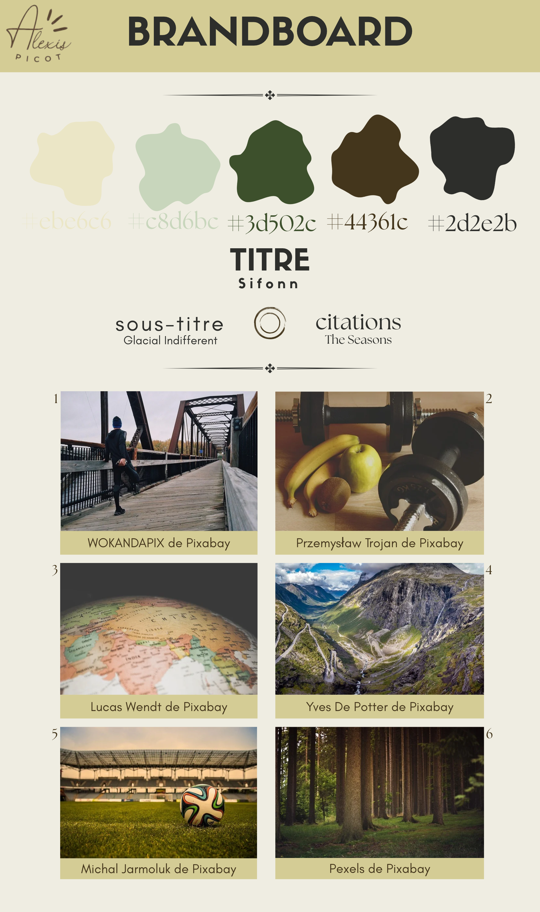
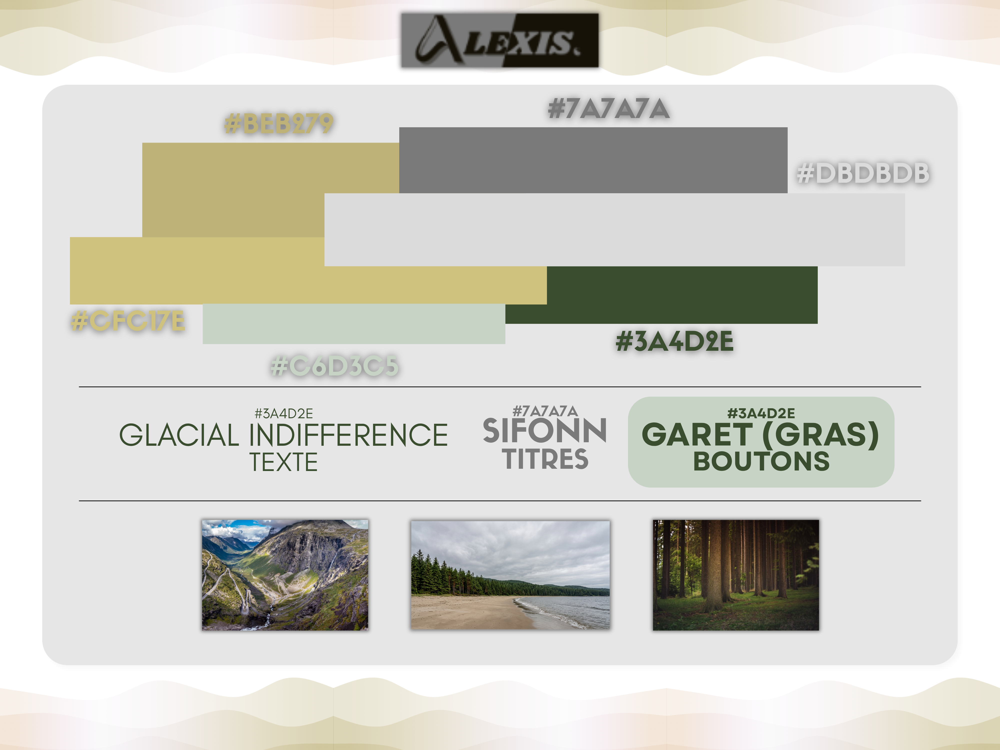
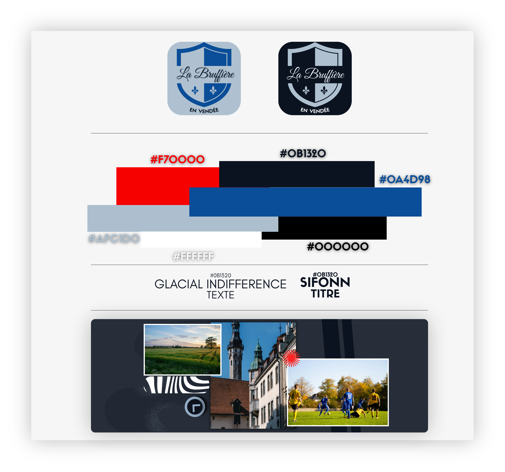

Mes chartes graphiques & brandboards
Au cours de mes deux années de formation, j'ai eu l'occasion de réaliser plusieurs chartes graphiques pour des sites fictifs ou réels, mais aussi des brandboards pour des marques fictives ou réelles, afin de mettre en avant leur identité visuelle et leur univers graphique.
Projet de 2e année
Voici ma réalisation la plus récente, et pour le moment la seule de deuxième année.
Rapid Trigger : notre marque fictive
Ce projet a été réalisé en groupe dans le cadre de ma deuxième année de DEUST Webmaster. Mon rôle de designer UI/UX et de graphiste m'a amené à concevoir l'identité visuelle de notre marque fictive Rapid Trigger, spécialisée dans l'événementiel eSport. J'ai notamment travaillé sur la création du logo et de ses variantes, le choix des couleurs, les règles d'utilisation, les typographies ainsi que l'univers graphique global à travers un moodboard. L'objectif était de construire une identité visuelle cohérente, reconnaissable et adaptée à l'univers de l'eSport.


Projets de première année
À présent, voici les chartes graphiques réalisées lors de ma formation, en première année.
Premier brandboard
Ce premier brandboard avait pour objectif de m'initier à la création d'une identité visuelle cohérente. J'ai appris à associer différentes typographies, à sélectionner une palette de couleurs harmonieuse et à rechercher des références adaptées à l'univers souhaité. Ce travail m'a également permis de comprendre l'importance de la cohérence graphique entre les différents éléments d'un site web.
Télécharger cette charte graphique

Brandboard pour le Portfolio WordPress
Avant de concevoir mon portfolio avec WordPress, j'ai préparé son identité visuelle à travers un brandboard. Cette étape m'a permis de définir une direction graphique, notamment à travers le choix des couleurs, des typographies et de l'ambiance générale du site. L'objectif était de disposer d'une base visuelle cohérente afin de conserver une identité reconnaissable lors de la création des différentes pages.
Télécharger cette charte graphique

Charte pour le site de ma commune
J'ai eu l'occasion de travailler sur la refonte graphique du site web de ma commune, La Bruffière. Ce projet m'a amené à retravailler l'organisation des espaces, l'ergonomie et l'expérience utilisateur, tout en prenant en compte certaines normes et contraintes liées à la conception web. L'objectif était de proposer une interface plus cohérente et agréable à parcourir, tout en facilitant l'accès aux différentes informations du site.
Télécharger cette charte graphique

Vous avez consulté toutes les chartes graphiques que j'ai réalisées durant ma formation.